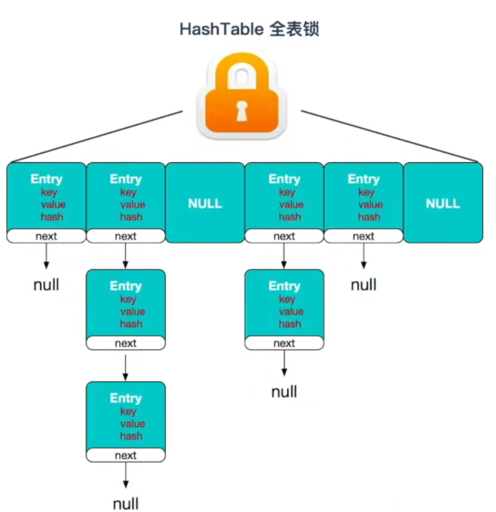
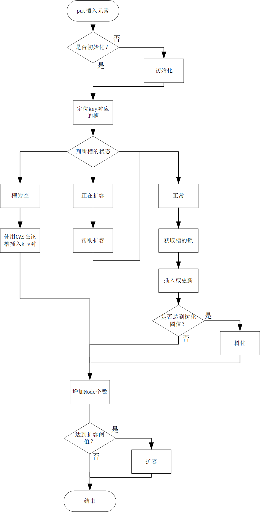

1. 介绍
java.util.concurrent 中包含大量线程安全的集合，一一介绍是不太现实的，而ConcurrentHashMap 在面试中最常考察，本文将对它进行介绍。
HashMap 不是线程安全的，想要得到一个线程安全的 Map 集合，一个直观的想法是对每个方法使用 synchronized 加锁，实现最为简单，但是这样锁粒度过大，同一时间只有一个线程能够访问。
HashTable 就是这样的实现方式，一般不推荐使用。

改进方法是降低加锁的粒度，对 Map 中部分元素进行加锁，达到多线程访问的效果。
ConcurrentHashMap 在 jdk 1.7 和 1.8 版本的实现方式是不同的，本文主要介绍 1.8 版本的实现。
jdk 1.7 中的 ConcurrentHashMap 的实现思路是使用分段锁，这个思路在其他语言的线程安全集合中大量应用，推荐掌握。
2. 设计思路
ConcurrentHashMap 的数据存储与获取与 HashMap 高度相似：
- 使用
Node 数组存储元素，数组长度为 2 的幂，求余采用位运算实现；
- 采用拉链法解决哈希冲突，当链表长度达到 8 将转为红黑树；
- 元素个数达到负载因子 * 数组长度 时，将触发扩容，扩容时将原来的链表拆分为高位链表和低位链表。扩容后红黑树可能会退化为链表；
- 由于
Node 会对 key 的 hash 进行缓存，存放的 key 对象需要为不变的，否则有ConcurrentHashMap 中可能存在相同的 key 对象，或者使用 get 方法但取不到对应的 value 值。
key 对象应该不可变是一个小坑点，但很少博客提及这个问题。
ConcurrentHashMap 采用 synchronized + CAS 的方式保证线程安全。插入时需要获得 key 对应 Node 数组槽（也就是链表头节点或者红黑树根节点）的锁，对于同一个槽，同一时刻只能有一个线程进行插入，如果插入时正在发生扩容，则插入线程会帮助进行迁移元素。获取元素的操作则使用 CAS，实现无锁并发读取。
其中 sizeCtl 属性标记了不同的状态：
1
| private transient volatile int sizeCtl;
|
sizeCtl > 0，进行扩容的阈值，等于 负载因子 * 数组长度；sizeCtl = 0，还未初始化；sizeCtl = -1，正在进行初始化；sizeCtl = -(1+n)，有 n 个线程正在协助扩容。
下面将从源码的角度介绍几个主要操作。
3. 初始化
类似 HashMap，ConcurrentHashMap 也是懒初始化的，会在插入第一个 k-v 时分配空间（可见下文的 putVal 方法），调用的方法是 initTable()。
在进行初始化时也可能存在多线程竞争，而抢到初始化资格的标志就是能否用 CAS 将 sizeCtl 置为 -1，而其他未进行初始化的线程将进行自旋。
1
2
3
4
5
6
7
8
9
10
11
12
13
14
15
16
17
18
19
20
21
22
23
24
25
26
27
| private final Node<K,V>[] initTable() {
Node<K,V>[] tab; int sc;
while ((tab = table) == null || tab.length == 0) {
if ((sc = sizeCtl) < 0)
Thread.yield();
else if (U.compareAndSwapInt(this, SIZECTL, sc, -1)) {
try {
if ((tab = table) == null || tab.length == 0) {
int n = (sc > 0) ? sc : DEFAULT_CAPACITY;
Node<K,V>[] nt = (Node<K,V>[])new Node<?,?>[n];
table = tab = nt;
sc = n - (n >>> 2);
}
} finally {
sizeCtl = sc;
}
break;
}
}
return tab;
}
|
4. put
4.1 主流程
put 方法是 ConcurrentHashMap 中最为复杂的部分，涉及初始化、树化、扩容、帮助迁移等。主要流程为：
- 如果
Node 数组未初始化，则进行初始化
- 根据 key 的 hash 值定位某个槽后，分为以下情况：
- 为空，则使用 CAS 将 k-v 对放入槽；
- 正在扩容，则帮忙转移节点；
- 该槽位不为空则未进行扩容，获取槽的锁，判断节点是链表节点还是红黑树节点，选择对应的插入/替换手段。插入后视情况进行树化。
- 增加元素个数，并视情况进行扩容。

源码如下：
1
2
3
4
5
6
7
8
9
10
11
12
13
14
15
16
17
18
19
20
21
22
23
24
25
26
27
28
29
30
31
32
33
34
35
36
37
38
39
40
41
42
43
44
45
46
47
48
49
50
51
52
53
54
55
56
57
58
59
60
61
62
63
64
65
66
67
68
69
70
71
72
73
74
75
76
77
78
79
80
81
| public V put(K key, V value) {
return putVal(key, value, false);
}
final V putVal(K key, V value, boolean onlyIfAbsent) {
if (key == null || value == null) throw new NullPointerException();
int hash = spread(key.hashCode());
int binCount = 0;
for (Node<K,V>[] tab = table;;) {
Node<K,V> f; int n, i, fh;
if (tab == null || (n = tab.length) == 0)
tab = initTable();
else if ((f = tabAt(tab, i = (n - 1) & hash)) == null) {
if (casTabAt(tab, i, null,
new Node<K,V>(hash, key, value, null)))
break;
}
else if ((fh = f.hash) == MOVED)
tab = helpTransfer(tab, f);
else {
V oldVal = null;
synchronized (f) {
if (tabAt(tab, i) == f) {
if (fh >= 0) {
binCount = 1;
for (Node<K,V> e = f;; ++binCount) {
K ek;
if (e.hash == hash &&
((ek = e.key) == key ||
(ek != null && key.equals(ek)))) {
oldVal = e.val;
if (!onlyIfAbsent)
e.val = value;
break;
}
Node<K,V> pred = e;
if ((e = e.next) == null) {
pred.next = new Node<K,V>(hash, key,
value, null);
break;
}
}
}
else if (f instanceof TreeBin) {
Node<K,V> p;
binCount = 2;
if ((p = ((TreeBin<K,V>)f).putTreeVal(hash, key,
value)) != null) {
oldVal = p.val;
if (!onlyIfAbsent)
p.val = value;
}
}
}
}
if (binCount != 0) {
if (binCount >= TREEIFY_THRESHOLD)
treeifyBin(tab, i);
if (oldVal != null)
return oldVal;
break;
}
}
}
addCount(1L, binCount);
return null;
}
|
4.2 扩容
todo。。。
addCount 方法增加元素个数，并判断是否进行扩容，源码如下：
1
2
3
4
5
6
7
8
9
10
11
12
13
14
15
16
17
18
19
20
21
22
23
24
25
26
27
28
29
| private final void addCount(long x, int check) {
CounterCell[] as; long b, s;
if ((as = counterCells) != null ||
!U.compareAndSwapLong(this, BASECOUNT, b = baseCount, s = b + x)) {
s = sumCount();
}
if (check >= 0) {
Node<K,V>[] tab, nt; int n, sc;
while (s >= (long)(sc = sizeCtl) && (tab = table) != null &&
(n = tab.length) < MAXIMUM_CAPACITY) {
int rs = resizeStamp(n);
if (sc < 0) {
if ((sc >>> RESIZE_STAMP_SHIFT) != rs || sc == rs + 1 ||
sc == rs + MAX_RESIZERS || (nt = nextTable) == null ||
transferIndex <= 0)
break;
if (U.compareAndSwapInt(this, SIZECTL, sc, sc + 1))
transfer(tab, nt);
}
else if (U.compareAndSwapInt(this, SIZECTL, sc,
(rs << RESIZE_STAMP_SHIFT) + 2))
transfer(tab, null);
s = sumCount();
}
}
}
|
5. get
get 方法逻辑比较简单，主要是判断当前是否在进行扩容，到相应的数组中查找元素。
1
2
3
4
5
6
7
8
9
10
11
12
13
14
15
16
17
18
19
20
21
22
| public V get(Object key) {
Node<K,V>[] tab; Node<K,V> e, p; int n, eh; K ek;
int h = spread(key.hashCode());
if ((tab = table) != null && (n = tab.length) > 0 &&
(e = tabAt(tab, (n - 1) & h)) != null) {
if ((eh = e.hash) == h) {
if ((ek = e.key) == key || (ek != null && key.equals(ek)))
return e.val;
}
else if (eh < 0)
return (p = e.find(h, key)) != null ? p.val : null;
while ((e = e.next) != null) {
if (e.hash == h &&
((ek = e.key) == key || (ek != null && key.equals(ek))))
return e.val;
}
}
return null;
}
|
参考资料